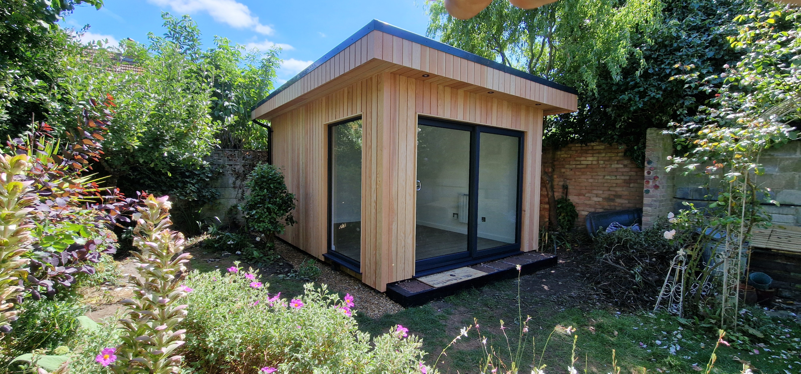

Specialise in Bespoke Garden Rooms
A service that has become our signature offering across Brighton and Sussex.
ARC SUSSEX CARPENTRY
Take a deeper look, We know you will be inspired…
View here

SPECIALISTS IN BESPOKE GARDEN RENOVATIONS
At ARC Sussex Carpentry, we are proud to be recognised as one of the leading carpenters in Brighton. Based in Sussex and serving clients across Brighton, Worthing, and the wider South Coast, our highly skilled team delivers bespoke carpentry, tailored renovations, and our signature service - bespoke garden rooms in Brighton.
With years of hands-on experience and a reputation for craftsmanship, we take on projects of all sizes, from precision joinery to complete transformations. As trusted Sussex carpenters, we combine traditional woodworking techniques with modern design sensibilities, ensuring every project we deliver adds real beauty, function, and long-term value to your home or property.
When you're searching for expert carpenters in Brighton, you want more than just someone who can build. You need a team that understands design, brings creativity to the table, and works closely with you to bring your ideas to life.
At ARC Sussex Carpentry, we:
A service that has become our signature offering across Brighton and Sussex.
From initial sketches and ideas through to final finishes and installation.
Projects designed around your lifestyle, your home, and your available space.
Durable materials selected to create lasting and timeless results.
Professional Sussex carpenters balancing creativity with practical craftsmanship.
Our clients choose us because we don't just build - we create environments that transform the way you live in and enjoy your property.
BESPOKE GARDEN ROOMS
More and more homeowners in Brighton are discovering the value of bespoke garden rooms. A garden room is more than just an outdoor building - it's a lifestyle upgrade. Whether you want a light-filled home office, a creative studio, a fitness space, or a sanctuary for relaxation, a garden room adds usable, versatile square footage to your property.
At ARC Sussex Carpentry, we specialise in designing and building bespoke garden rooms in Brighton that reflect your unique needs and style. Our garden rooms are not prefabricated or one-size-fits-all. Instead, each project begins with your vision. From there, our skilled Brighton carpenters craft a tailored design that integrates seamlessly with your home and garden.
Some popular uses for our bespoke garden rooms include:
Because we are expert Sussex carpenters, every detail is considered - from insulation and glazing to bespoke storage, flooring, and interior finishes. This ensures that your garden room is not only beautiful but also functional all year round.
BRIGHTON GARDEN ROOMS
Adding a bespoke garden room can significantly increase both the functionality and value of your Brighton property. With property prices in Sussex at a premium, garden rooms are an affordable and creative way to extend your living space without the hassle of large-scale renovations.
A well-designed garden room can add up to 5-15% to the resale value of your property.
Adaptable for work, leisure, fitness, or accommodation, garden rooms evolve with your needs.
Enjoy the beauty of your garden with a stylish and practical living area.
Built with sustainable and insulated materials, our garden rooms are designed to be eco-conscious and cost-effective.
For Brighton homeowners, a bespoke garden room is not just an addition - it's an investment that enhances daily living while delivering long-term financial rewards.
SPECIALISTS IN BESPOKE GARDEN RENOVATIONS
Beyond garden rooms, ARC Sussex Carpentry also specialises in bespoke garden renovations. We believe your garden should be an extension of your home - a place where design, comfort, and nature come together.
Our Brighton carpentry team can transform any outdoor space into a magical world, no matter its size or condition. From the earliest stages of concept and design, we collaborate closely with you to understand your ideas and aspirations. Then, using our carpentry expertise, we bring those ideas to life with precision, creativity, and a focus on lasting quality.
Our bespoke garden renovation services include:
Whether you want a serene garden retreat, a social hub, or a modern outdoor living space, our Sussex carpenters have the skills to create something truly unique.
FROM IDEA TO CREATION
One of the reasons ARC Sussex Carpentry stands out among other carpenters in Brighton is our commitment to the full process of design and build. We don't just execute - we guide you through every stage.
We begin with your vision, discussing your ideas and needs to create a concept that works for your lifestyle.
Using our carpentry expertise, we craft a bespoke design that balances style, practicality, and budget.
Our Brighton carpenters bring the design to life with precision and attention to detail.
We complete each project to the highest standard and provide ongoing support where needed.
This end-to-end service ensures a smooth, stress-free process and a finished result that exceeds expectations.
SUSSEX CARPENTERS
ARC Sussex Carpentry is proud to serve clients not only in Brighton but across the wider Sussex region, including Worthing, Hove, Shoreham, and beyond. As experienced Sussex carpenters, we are committed to delivering the same high standard of workmanship wherever the project takes us.
Our reputation is built on word of mouth, repeat clients, and the quality of our finished work. When you choose ARC Sussex Carpentry, you are choosing a trusted partner who puts creativity, quality, and your satisfaction at the heart of every project.
See the Areas We CoverWHY ARC SUSSEX CARPENTRY
Our expertise and portfolio in this area are a key part of what we offer across Brighton and Sussex.
We don't use templates or prefabricated models - every project is unique.
From concept to finishing touches, no detail is overlooked.
Your vision drives everything we do.
Our garden rooms and renovations are designed to add genuine lifestyle and property value.
START YOUR PROJECT
If you are ready to transform your home or garden, the team at ARC Sussex Carpentry is here to help. Whether you're interested in a bespoke garden room in Brighton, a creative renovation, or simply want to work with expert Sussex carpenters who care about quality, we are the team to call.
Contact us today to discuss your ideas and book a consultation. Let's bring your vision to life with craftsmanship, creativity, and passion.

Have us realise your vision
Book A FREE Consultation